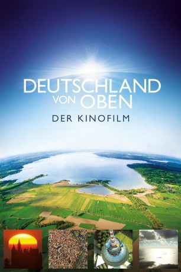

")
 
 IMDB-Wertung: 7.6 / 10
IMDB-Wertung: 7.6 / 10  Metascore:
Metascore: 
Deutschlands zeigt sich von seinen besten Seiten - aber einmal anders: Vom Wattenmeer über den Watzmann, den Kölner Dom, die Dünen Helgolands, die Duisburger Stahlwerke, bis hin zu den Allgäuer Alpen mitsamt ihren wild lebenden Steinböcken - Die Dokumentation unternimmt hoch über den Dächern unserer Heimat eine Reise durch die deutschen Lüfte und zeigt Deutschland dabei fast ausschließlich aus der Vogelperspektive, auf Augenhöhe mit Adlern und Störchen.
Jahr: 2012
Dauer: 110 Minuten
FSK:
Land: Deutschland Studio: UFATonspuren:
Untertitel:
Auflösung: 720p (1280x544) Größe: 5212 MB
Genre: Dokumentation, TV-Serie
Regisseur: Petra Höfer, Freddie Röckenhaus
Drehbuch: Petra Höfer, Freddie Röckenhaus
Soundtrack:
Darsteller:
Datei: X:\Dokumentationen\Von Oben\Deutschland von oben\Deutschland von oben (2012, FSK, 1280x544).mkv seit 16.06.2015
Festplatte: HD Serien(SU-Z)+Dokus+Musik
 Es gibt insgesamt 14 Filme in der Gruppe 'Dokumentationen\Von Oben'
Es gibt insgesamt 14 Filme in der Gruppe 'Dokumentationen\Von Oben'